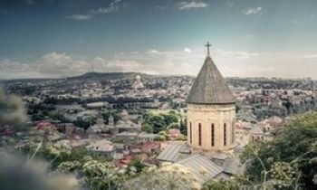

Writing & Research
A curated collection of work demonstrating skills in investigative reporting, narrative structure, and multi-platform communication to produce impactful journalism and dynamic multimedia features for any platform.
Featured Multimedia Projects
Multimedia Project

Travel Journalism:
Croatia
A visual and cultural travelogue documenting the Dalmatian Coast’s unique heritage, stunning natural parks, and the preserved Venetian architecture of its historic cities.
View Project
Multimedia Project

The Machine:
From Georgian Farm to UFC Gold
A feature tracing the journey of UFC Bantamweight Champion Merab Dvalishvili, from his childhood farm in Georgia to his dominant rise in mixed martial arts.
View ProjectExternal Writing Portfolio
Personal Blog on Wordpress
Long-form sociological analysis, opinion pieces, and technology commentary.
Professional Articles on Medium
Selected news reporting and concise professional articles on current media trends.